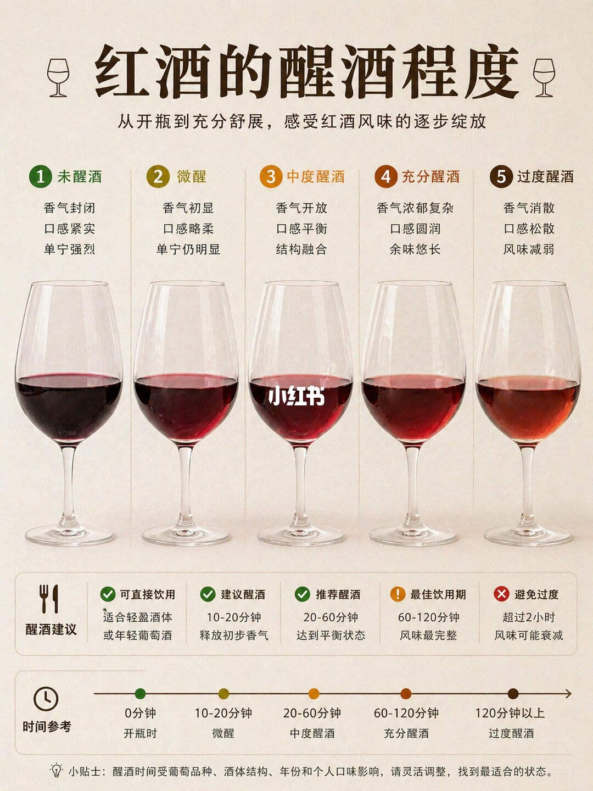

图文实录 · 小红书 · 亨利在巴黎
一张图看懂红酒醒酒过程
这张图把开瓶之后的红酒分成五段：没醒、微醒、中度、充分、过度。香气和单宁会先松开，醒太久又会散掉。
1/1
五段状态和对应分钟
未醒酒：颜色深、香气封闭、口感紧、单宁强，图上说轻酒体或年轻酒可以直接喝。微醒约 10–20 分钟，香气开始出来，口感略柔，单宁还明显。中度约 20–60 分钟，香气打开，口感平衡。充分醒酒约 60–120 分钟，被标成最佳饮用窗口，香气复杂、口感圆、余味长。超过 120 分钟标成过度：香气散、口感松、风味变弱，图上用叉表示不要再放。
页脚写醒酒时间还受品种、结构和年份影响，要自己调整。说明文字另补了两条：酒体越重醒得越久，年份越老醒得越短，并说多数酒的平衡出现在 20–60 分钟。这和画面把 60–120 分钟标成「最完整」并不完全同一句话，用的时候要看这瓶酒偏轻还是偏重。

汇总
先看酒体，再套分钟
图上的分钟是参考，不是每一瓶的完成时间。轻酒体可以少醒，重酒体靠近充分醒酒那一档，老酒不要按两小时硬等。过度醒酒的判断是香气散掉、结构变松，不是颜色变浅就一定坏了。这是作者的品饮经验，没有给出具体品种的实验记录。